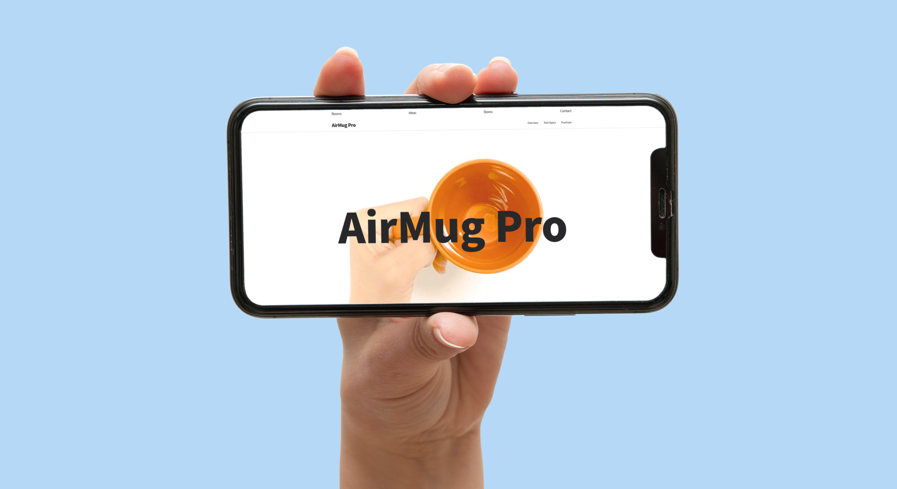
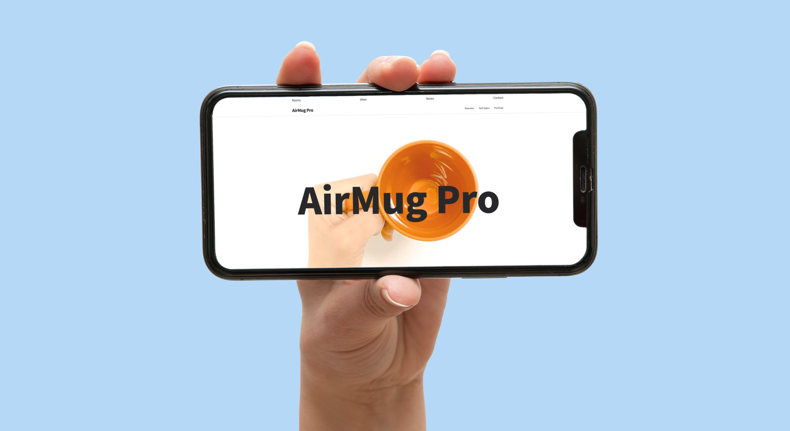

suhyeonkr@gmail.com
suhyeonkr@gmail.com
 


Overview
This is a fictional brand.
Overview
I am very interested in interactive design.
Overview
YG entertainment is a representative Korean entertainment company